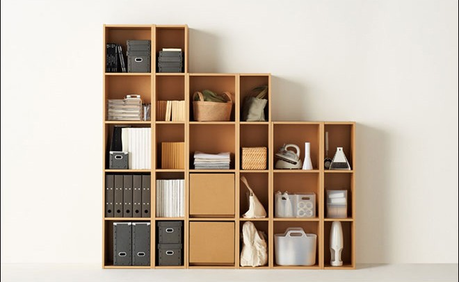

新房卧室装修小心四点忌讳 全避开才能财源广进
发布日期：2017-03-29 10:47 分类：装修风水
开关插座的关键不用多说，大家都懂得，如何判断开关插座的品质呢？有几点倒是可以借鉴。
1、将开关或插座的外框取下来，用手捏一下，如果不会断裂说明是比较好的PC料，这样的材料绝缘性和抗老化都比较好，直观的感觉就是这样的材料以后不会发黄。
2、开关插座要固定到墙面需要用螺丝拧到其底座上，这个底座的结实度也将影响开关面板的使用，现在有的品牌是用冷扎钢板制作这个底座，这样的会更加耐用。
3、开关插座的模块质量是最关键的，可从肉眼很难辨别，其实我们可以通过一些细节来判断，首先一般越沉的质量会越好，另外开关插座后面都有固定线头的螺丝，好的应该是纯铜的，而且比较大颗的，而有的开关插座的螺丝是镀铜或者小小的，这都说明其质量不是很好。
4、插座应该购买带安全保护的，它的插孔里面有挡片，是要两个孔一起往里插才能插进去，你可以找个铁片试试，单插一个孔，应该插不进去。
家装细节之开关插座的选择
February 04, 2016
开关插座的关键不用多说，大家都懂得，如何判断开关插座的品质呢？有几点倒是可以借鉴。
1、将开关或插座的外框取下来，用手捏一下，如果不会断裂说明是比较好的PC料，这样的材料绝缘性和抗老化都比较好，直观的感觉就是这样的材料以后不会发黄。
2、开关插座要固定到墙面需要用螺丝拧到其底座上，这个底座的结实度也将影响开关面板的使用，现在有的品牌是用冷扎钢板制作这个底座，这样的会更加耐用。
3、开关插座的模块质量是最关键的，可从肉眼很难辨别，其实我们可以通过一些细节来判断，首先一般越沉的质量会越好，另外开关插座后面都有固定线头的螺丝，好的应该是纯铜的，而且比较大颗的，而有的开关插座的螺丝是镀铜或者小小的，这都说明其质量不是很好。
4、插座应该购买带安全保护的，它的插孔里面有挡片，是要两个孔一起往里插才能插进去，你可以找个铁片试试，单插一个孔，应该插不进去。

选择开关插座Action：
眼观
一般好的产品外观平整、无毛刺披峰，色泽和材料采用进口优质PC料，阻燃性能良好，有的产品表面虽光洁，似乎涂了一层油，但色泽苍白、质地粗大，此类材料阻燃性不好，给家居用电埋下了火灾隐患。
手动
好的产品面板用手很难直接取下，必须借助一定的专用工具，而一般的非主流中低档产品则很容易用手取下面盖，造成家居和公共场所的不雅。选择时用食指、拇指分按面盖对角成端点，一端按住不动，另一端用力按压，面盖松动、下陷的产品质量较差，反之则质量可信。
耳听
轻按开关功能件，滑板式声音越轻微、手感越顺畅，节奏感强则质量较优；反之，启闭时声音不纯、动感涩滞，有中途间歇状态的声音则质量较差。
看结构
1、目前较通用的开关结构有两种：滑板式和摆杆式。滑板式开关声音雄厚，手感优雅舒适；摆杆式声音清脆，有稍许金属撞击声，在消灭电弧及使用寿命比传统的滑板式结构较稳定，技术成熟。
2、双孔压板接线较螺钉压线更安全。因前者增加导线与电器件接触面积，耐氧化，不易发生松动、接触不良等帮障；而后者螺钉在坚固时容易压伤导线，接触面积小，使电件易氧化、老化，导致接触不良。目前好的产品均采用双孔压板接线方式。
比选材
开关纯银导电能力强，发热量少，安全性能高，触点采用铜质材料则性能大打折扣；插座材料采用锡磷生铜片可得到配合最好的强度、韧性、弹性等指标，比一般黄铜作簧片的插座耐用数十倍，且极少有插板时强烈的电弧烧坏插座的现象；镀金的簧针极难氧化，性能稳定，能保证音质的清晰真实，数据传输的快速准确。
看标识
市场上目前常用的家庭一般开关的额定电流为16A，插座电流为10A，空调、热水器的插座较大的有16A，好的产品明确标识可用电流强度，而劣质产品的标识模糊，数据夸大，无法确定标识的额定电流是否可以安全无忧地通过而不至满屋浓烟。
认品牌
名牌产品经时间、市场的严格考验，是消费者心目中公认的安全产品，无论是材质、品质均严格把关，包装、运输、展示、形象设计各方面均有优质的流程，名牌电工产品不仅是一种安全电工功能用品，更是一件件精致、优雅，折射出高雅文化品味的艺术品。